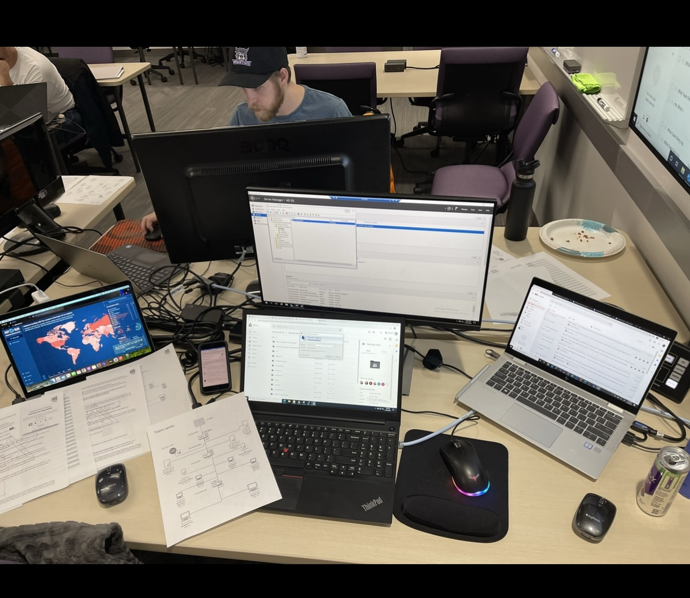

Applying Cybersecurity Concepts Through Real-World Projects and Hands-On Learning
 During both undergraduate and graduate studies, Erika Hernandez focused heavily on hands-on cybersecurity, infrastructure, and systems administration projects designed to simulate real-world enterprise environments. These experiences helped bridge the gap between classroom theory and practical IT operations — strengthening skills in cybersecurity, compliance, vulnerability management, networking, and risk assessment.
During both undergraduate and graduate studies, Erika Hernandez focused heavily on hands-on cybersecurity, infrastructure, and systems administration projects designed to simulate real-world enterprise environments. These experiences helped bridge the gap between classroom theory and practical IT operations — strengthening skills in cybersecurity, compliance, vulnerability management, networking, and risk assessment.
Rather than focusing only on textbook concepts, these projects emphasized practical problem-solving, technical documentation, teamwork, system hardening, and security analysis. Many of the concepts explored in these assignments directly connect to responsibilities Erika later encountered in professional IT and cybersecurity environments.
Areas of focus included:
• CIS Controls & Security Frameworks
• Vulnerability Assessments & Risk Analysis
• Network Security & Infrastructure Protection
• Linux Administration & Kali Linux
• Security Auditing & Compliance Concepts
• Team-Based Cybersecurity Competitions
• Technical Documentation & Reporting
• Incident Response & System Hardening
Fall 2026 · Dakota State University · INFA 713
Personal Security Risk Assessment
I assessed five devices on a small home network and presented the results in an executive memo. I built an asset inventory and network diagram, used the desktop Security Risk Assessment (SRA) Tool to document findings, and separated questions specific to healthcare from risks that applied to the network.
What the assessment looked at
I evaluated whether existing safeguards could protect stored data and whether backups could support recovery after a disruption.
What I recommended
I recommended backing up more often, testing file restores, evaluating drive encryption, and making security monitoring more reliable.
How the CIS Controls help
A risk assessment helps decide what needs attention first. The CIS Controls give teams concrete safeguards to work toward. Control 1 connects to the asset inventory, Control 3 to protecting stored data, Control 8 to collecting and reviewing logs, and Control 11 to backing up data and testing recovery. These are examples of how the findings map to safeguards.
Why this matters in practice
Using a small network let me practice the same process I would bring to an organization: identify what needs protection, explain the impact if something goes wrong, and give leadership practical next steps. For example, a successful backup job tells me a copy was made. A restore test tells me whether the team can actually recover what it needs.
Instructor feedback: The assessment was commended for identifying assets and associated risks, categorizing risk appropriately, and presenting a strong executive summary for the customer.
CIS Controls & IT Audit Frameworks
One major area of study focused on CIS Controls and their role in strengthening organizational cybersecurity and operational security practices. Through coursework and research projects, Erika explored how businesses use security controls to improve risk management, system integrity, access control, and audit readiness.
These concepts later became highly relevant in professional environments involving IT controls, compliance reviews, operational security processes, and audit preparation efforts. This experience helped build a stronger understanding of how cybersecurity frameworks support real business operations beyond the classroom.
Vulnerability Assessment & Security Analysis with Nessus
As part of a hands-on cybersecurity assignment, Erika performed vulnerability assessments using Nessus within a Kali Linux virtual machine environment. The project involved scanning multiple operating systems and intentionally vulnerable machines to identify security weaknesses, analyze vulnerabilities, and research associated CVEs (Common Vulnerabilities and Exposures).
This project strengthened practical experience with:
• Vulnerability scanning and reporting
• Kali Linux administration
• Security analysis and remediation concepts
• CVE research and risk identification
• Troubleshooting and lab environment configuration
The assignment provided valuable exposure to the types of tools and methodologies commonly used within cybersecurity operations and vulnerability management programs.
Cybersecurity Competition & Team Defense Operations

The competition emphasized collaboration, rapid problem-solving, system hardening, patch management, and defensive security operations under pressure. With limited preparation time and incomplete information about the environment, participants had to quickly assess risks, secure systems, and maintain operational stability as a team.
This experience reinforced the importance of communication, adaptability, and teamwork within cybersecurity operations while providing practical exposure to real-world defensive security concepts.